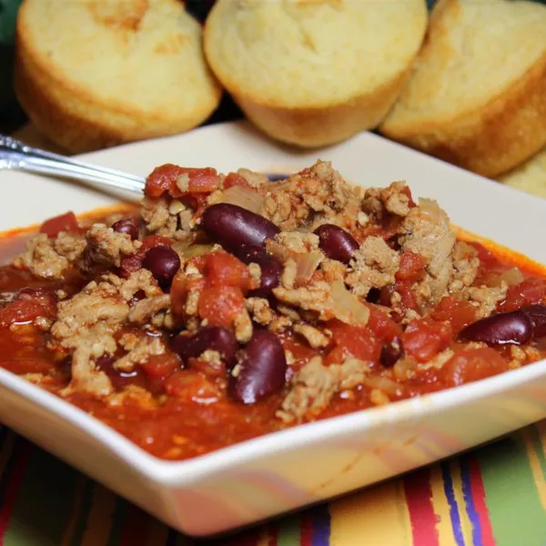

Turkey Chili for the heart

The chili that non-beef eaters crave
Are you someone who's given up eating beef and pork, but still crave
that sweet and tangy taste of chili? Well if you are (I am guilty of it),
then this recipe is the one you've been waiting for! Climb down to
the ingredients and steps below to satisfy that craving!
Ingredients
- 1 1/2 teaspoons olive oil
- 1 pound ground turkey
- 1 chopped onion
- 2 cups of water
- 28 oz canned crushed tomatoes
- 16 oz canned kidney beans (drain them, rinse them, and mash)
- 1 tablespoon minced garlic
- 2 tablespoons chili powder
- 1/2 teaspoon paprika
- 1/2 teaspoon dried oregano
- 1/2 teaspoon ground cayenne pepper
- 1/2 teaspoon ground cumin
- 1/2 teaspoon salt
- 1/2 teaspoon ground black pepper
Steps
- Heat oil in a large pot with medium head. Add turkey and
allow to cook while occasionally stirring. Ensure turkey
browns evenly (usually 6 to 8 min), then stir in onion and cook until tender.
- Add in water, tomatoes, kidney beans, and minced garlic.
Stir in the remaining ingredients (spices).
- Bring mixture to a boil. Reduce heat to low. Then allow chili to simmer for 30 minutes.
- Allow to cool, and Enjoy!